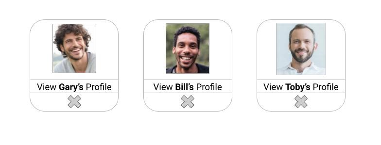

gavin raney || gavin's github
these prompts get users dangerously close to following or requesting to follow someone they likely did not intend to because of poor interface design
fixing this issue has always seemed relatively simple to me and has always been a frustrating small issue i hoped to see tweaked with each app update
my ideas are varied but here are my suggested possible changes:
1.) having the options on opposite sides of the screen
tony hamsters
2.) removing the follow option altogether and instead asking the user to review later or visit the suggested profile
tony hamsters
3.) remove the screen and option altogether, opting for a suggested page showing a number of accounts only allowing the user to either view an account or remove it from their suggestions
